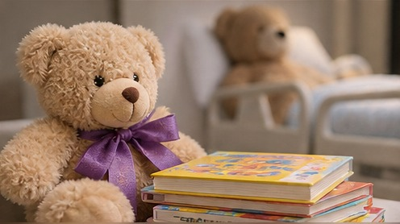

Christmas Community Lunch
A warm meal where everyone is welcome, regardless of their circumstances.
- A free Christmas meal for community members.
- Care bags filled with practical essentials.
- A special draw featuring a few larger gifts.
Practical ways to carry Annie's legacy forward.
Inspired by Annie's generosity, our initiatives bring people together to support individuals and families. Every contribution helps us share kindness, comfort and joy.
A warm meal where everyone is welcome, regardless of their circumstances.

Everyday essentials, thoughtfully gathered and given with love.

Collecting new gifts to help make Christmas brighter for children and families.

Sharing comfort and happiness with children spending time in hospital.